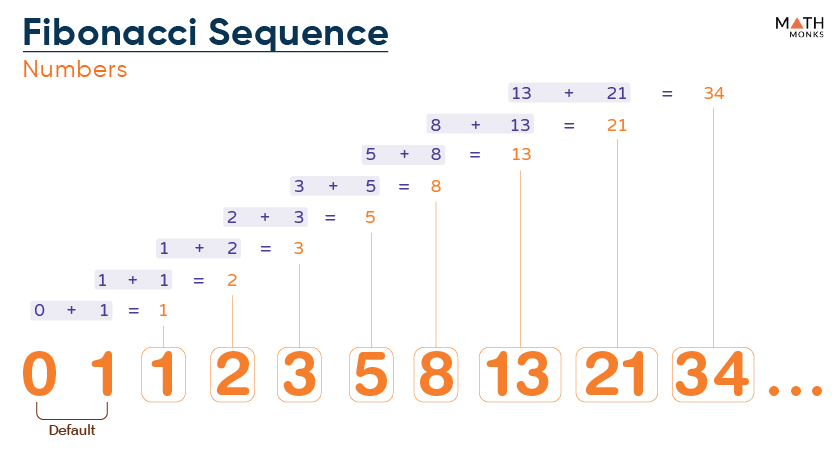
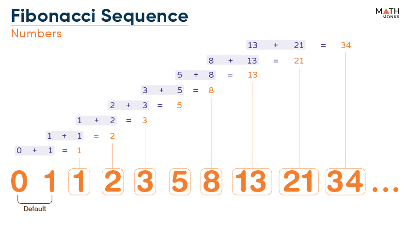

DATE :- 30-07-2024
1) WAP TO PRINT THE MAXIMUM DIGIT IN THE GIVEN NUMBER
INPUT :4891
OUTPUT: 9
2) WAP PRINT THE NUMBERS FROM -10 TO -1 WITHOUT USING <= OPERATOR
3) WRITE A PROGRAM TO PRINT THE SUM OF MAX AND MIN IN A NUMBER
INPUT :4891
DATE :- 31-07-2024
1) WAP TO PRINT THE PRIME NUMBERS FROM 1 TO 100
2) WAP TO CHECK WHETHER A NUMBER IS EVEN OR NOT WITHOUT USING %OPERATOR
DATE:- 01-08-2024
1) WAP to print the minimum prime number in the given number
2) WAP to print the sum of non prime numbers
3) WAP to print the sum of non prime odd numbers.
input: 789936
output: 9+9= 18
DATE:- 02-08-2024
1) Write a program to print the prime numbers in reverse order in the given number
input: 117835
output: 537
2) Write a program to print the prime numbers in ascending order in the given number
input: 117835
output: 357
DATE:- 05-08-2024
 1) WAP to print the sum of fact of all digits in the given number without using function

2) WAP tp print the sum of all fib numbers in the given number
inuput: 5612
output: 8
3) WAP to print the missing Fibonacci numbers
input: 5
output: 4 6 7 9 10
1) WAP to print the sum of fact of all digits in the given number without using function

2) WAP tp print the sum of all fib numbers in the given number
inuput: 5612
output: 8
3) WAP to print the missing Fibonacci numbers
input: 5
output: 4 6 7 9 10
DATE:-06-08-2024
1) WAP to print the missing Fibonacci numbers
input: 5
output: 4 6 7 9 10
DATE:- 07-08-2024
1) WAP to separate digits and alphabets in the given number
input: Hello20World
output: 20HelloWorld
2) WAP to print the number which are equal to each other
input: 474877
output:Â 44777
DATE:-
Hi iam Sharath